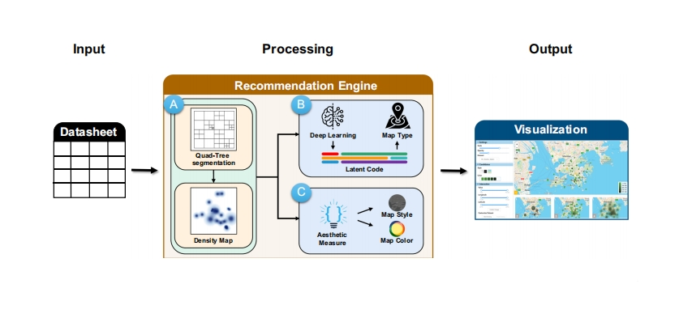

About Me
Hello~
I am Hanfeng Chen (陈晗锋), currently a full-time teacher at Yiwu Industrial and Commercial College (YWICC). Before that, I received my master's degree in Computer Science and Technology from East China Normal University (ECNU), supervised by Prof. Chenhui li.
Research Interests
- Artificial Intelligence Generated Content (AIGC)
- Data Visualization
- Human-centered AI
News
- [Nov. 2024] Our project won the Gold Award in the World Vocational College Skills Competition!
- [Apr. 2024] Our paper GeoVis: a data-driven geographic visualization recommendation system via latent space encoding is accepted by Journal of Visualization!
- [Aug. 2023] Start my career at YWICC 🏫
- [Jun. 2023] Graduated from East China Normal University. Got my Master's Degree 🎓
Publications

GeoVis: a data-driven geographic visualization recommendation system via latent space encoding
Journal of Visualization, 2024.
Competition & Project

China PPE Digital Team Board
2024
World Vocational College Skills Competition
2024
Life Gallery